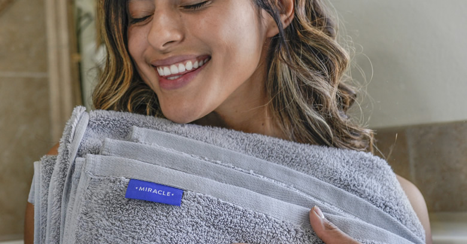
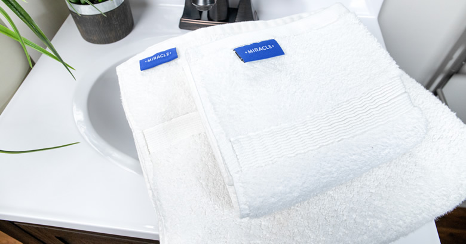
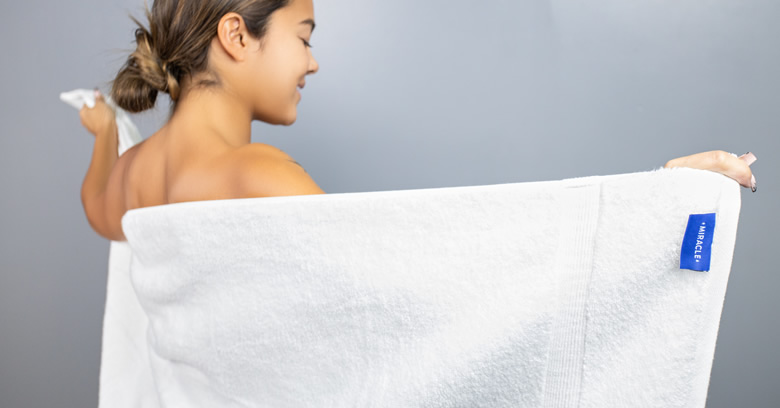

“I Always Felt Dirty, Even After I Showered. Turns Out, It Was My Towels!”

By Jessica Michelle | December 28th 2020
(No, they’re not scratchy and stiff like you think they might be.)

Even after I showered, I always felt dirty. I would wash my hair, scrub my body down with a loofa, all to still feel the same as I did before I showered. Dirty.
You might think it was my imagination. But it wasn’t. I would get these little bumps on my skin that made me itchy. I couldn’t figure out what the issue was.
Until one day. I was stepping out of the shower and wrapping my towel when it hit me - literally. The smell of these towels hit me like a brick wall. I thought ...
My towels smell like a dead body!
So I went downstairs and asked my husband about it. He normally does the laundry. And said he just washed the towels 2 days ago! I couldn’t believe how stinky the towels had become in such a short amount of time.
I had to research why the stench was so bad. And what I read disgusted me.
Did you know that if your towels stink, it actually means that you’ve got massive bacteria colonies growing in them?
Check For Available Discounts
It was enough to make me want to throw out my towels altogether.
But that explained the feeling of dirtiness after I’d gotten out of the shower. These grimey little mites would transfer from my towel and onto my skin right when I had just gotten clean. They’d make their way into my pores and create bumps, itchiness, and lots of times even pimples. I’m a grown woman and my towels were giving me pimples like I was 16 again!
I didn’t know what to do. I knew I couldn’t continue using these breeding-grounds we call towels, but what was I supposed to do? Air dry? In the winter? No thanks. So I kept using the dirty towels.
Then a coworker told me about this new discovery of his. They’re called Miracle Towels.
He said that these Miracle Towels never smell. At first I didn’t understand. Was he washing them everyday? How could these towels just stop bacteria production?
Then he explained. These towels are actually made by infusing all-natural silver with super soft cotton. (No, they’re not scratchy and stiff like you think they might be.)
Powerful Antibacterial Properties(1)(2)
Temperature Regulating(3)
Helps Increase Glowing Skin
Prevents The Growth Of
Odor-Generating Bacteria(4)
Why These Towels Are Infused With Silver
Well, silver’s a very special metal. I didn’t know this before, but after learning about these towels, silver’s properties piqued my interest.
What I discovered is that silver has been used as an antimicrobial tool for thousands of years.(5)
Essentially, silver prevents about 99% of the bacteria and other microbes(6). Pretty crazy to think about, right? How can something like silver prevent live bacteria?
It’s actually quite simple. There are particles in silver called ions. Those ions are positively charged. And bacteria and other microbes are negatively changed. So, the silver ions and bacteria are naturally attracted to each other.
When the silver ions and bacteria come together, the silver ions pierce the external cell of the bacteria. When they do, they damage the bacteria’s DNA and protein structure. Which halt’s the bacteria’s reproduction. So, eventually the bacteria and other microbes cells die off.
Why Miracle Towels Don’t Get “Dirty”
That’s what’s so great about Miracle Towels. They don’t just prevent the bacteria colonies once they’ve grown, but they actually prevent 99.9% of bacteria growth(7). This means that your towels stay clean far longer.
Which means, you literally stay cleaner. And it means less laundry. My husband and I used to have to wash the towels every weekend. Now, we can go weeks without washing them. So that’s certainly saved us money there.
My husband even told me that his skin has improved. Without all that bacteria in the towels, we had less of a chance of getting the bacteria on our skin.
So, my acne has totally cleared up. And the little itchy bumps I get completely went away too.


Where to Buy Miracle Towels
At first we were a little hesitant to buy. It seemed too good to be true. But when we went on the website, we learned that Miracle Towels really caters to their customers.
The thing that really sold is that they give you a 30 night trial! Which means you can test out Miracle products for 30 nights, and on the off chance you’re unhappy, you can send them back - free of charge. They even give you a 100% refund!
So, there’s zero risk in buying them.
You can’t get them locally. But they’ll ship them right to your door. And they even offer free shipping.
Take a look and pick which set works for you.
Check For Available Discounts

What Real Miracle Towel Users Say
“Absolutely amazing! No odor! Less laundry!”- Irina K.
“I am so happy with my towel set! I am a germaphobe and can't stand it when towels have any odor to them whatsoever, and my partner is really bad at hanging his towel up properly so his gets musty very quickly. These have been a lifesaver because they simply don't stink and they actually seem to take less time to dry. They're also very fluffy, absorbent, and high quality.”- Lauren D.
“So elegant and SOFT! My SO has problems, itchy red raised bumps, since we started using these. it is all but gone. Plus, who likes to wash all the time and pay for/waste all that water and detergent?! Definitely will be getting more! Thanks.”- Angel R.
We highly recommend reserving some now before they sell out.
TIP: If there is still stock available on their website and you make a purchase, you will have access to one-time-only bonus offers that will never be seen again. Make sure to take full advantage of them and stock up before their deals end.
Exclusive Discounts Starting at
20% OFF!

Exclusive Discounts Starting at
20% OFF!
This limited time deal is in high demand and stock keeps selling out.
CHECK AVAILABILITY
This special offer is valid until